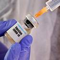

Sí, Bill Gates realmente quiere implantar microchips en la población para pelear contra el coronavirus
El co-fundador de
Microsoft ha estado hablando últimamente sobre la pandemia de covid-19.TED lo entrevistó el jueves pasado, y anterior a eso hizo una sesión de
Pregúntame Cualquier Cosa en
Reddit .De allí se desprendió y viralizó una polémica declaración que hizo y que lo pone nuevamente en la mira de los teóricos de la conspiración.
Durante la sesión que mantuvo en
Reddit , Gates habló sobre «certificados digitales» que revelen quien se ha recuperado de covid-19 o ha sido vacunado contra él.Esto ha generado la preocupación de muchos que temen que el multimillonario y filántropo quiera implantar microchips en todos.¿Pero está dicho temor fundamentado?¿Dijo realmente eso?La respuesta es sí, Bill Gates sugirió tal cosa, empero, es algo más fácil de decir que de hacer.Veamos por qué.
Gates ha estado trabajando para disminuir la curva de enfermedades serias en el mundo, como el polio, a través de su organización, la
Fundación Bill y Melinda Gates .
En la entrevista que le hizo TED, Bill Gates opinó sobre lo que él estaría haciendo en este momento si fuera presidente.Dijo que priorizaría el aislamiento a lo largo del país, poniendo como ejemplo el periodo de varias semanas que cumplió China y otros países, logrando bajar el número de infectados considerablemente.También abogó por una cuarentena extrema que dure de 6 a 10 semanas.
Él está en desacuerdo con el presidente Donald Trump, quien quiere ver a la economía funcionando para Pascuas, comentando que considera que esta es una actitud «muy irresponsable».
Gates dio respuestas similares en su hilo publicado en
Reddit .Dijo que los países que hacen un buen trabajo con las pruebas para detectar el virus y permanecen en cuarentena comienzan a ver mejoras en solo semanas, tras las cuales cree que deberían abrirse de nuevo y volver a la normalidad.
Sin embargo, su comentario más controvertido fue aquel que hizo acerca de unos «certificados digitales» que registrarían si alguien ha sido vacunado o no contra el covid-19.
I’m answering your questions about the #COVID19 coronavirus on @reddit in 10 minutes: https://t.co/JXEYRCpCza pic.twitter.com/ESyUqomdSD — Bill Gates (@BillGates) March 18, 2020
«Eventualmente, tendremos certificados digitales que nos mostrarán quienes se han recuperado, quienes han sido testeados recientemente, o cuando tengamos una vacuna quién la ha recibido», escribió en
Reddit .
Gates posiblemente se esté refiriendo a los tatuajes de puntos cuánticos que actualmente están siendo desarrollados por los investigadores del MIT y de la Universidad de Rice.Estos tatuajes están diseñados para almacenar los registros e historiales de vacunación de cada persona.En diciembre pasado, los investigadores de las dos universidades declararon que estaban desarrollando estos tatuajes luego que Gates los instara a hallar una solución para identificar a aquellos que no habían sido vacunados contra varias enfermedades.
En otro hilo de conversación relacionado, algunos
redditores han debatido si la idea de Gates sobre estos registros digitales podrían ser aplicada ahora.
Uno expresó la preocupación de que, en el futuro cercano, un microchip incrustado en el cuerpo con un registro digital de vacunación contra el coronavirus pueda ser requerido con el fin de salir de sus casas.Otros notaron que los gobiernos no han exigido tener o hecho algo similar con otras vacunas, por lo que difícilmente hagan tal cosa con el covid-19.
En el comentario de Gates, utilizó la palabra «eventualmente», y la tecnología de la que estaba hablando seguramente aún está en una fase muy temprana de desarrollo.Por lo tanto, tal vez sea un poco pronto para preocuparnos sobre alguien forzándonos a tatuarnos o implantarnos microchips —más allá que es entendible considerando la paranoia reinante potenciada por los medios—.
No obstante, esto no significa que en el futuro la idea de Gates no se vaya a volver una realidad…
Fuente:
ValueWalk .
Posted On: 2020-03-28T00:00:00
Posted By: Mystery Planet

Content Date: 2020-03-28
Download Date: 2021-05-30
Document ID: L0C04CJV9